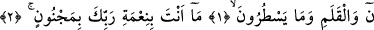
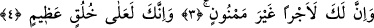
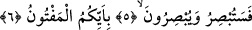

SEN ELBETTE YÜCE
BİR AHLÂK ÜZERESİN
Bismillâhirrahmânirrahîm
1. Nûn. Kaleme ve (kalem tutanların) yazdıklarına andolsun ki (Rasûlüm)
2. Sen -Rabbinin nimeti sâyesinde- mecnûn değilsin.
3. Hiç şüphesiz senin için bitip tükenmeyen bir mükâfat vardır.
4. Ve sen elbette yüce bir ahlâk üzeresin.
5. Yakında sen de göreceksin, onlar da.
6. Hanginizde delilik olduğunu.
“Nûn” yâni bu, “Nûn sûresidir.” Ya da “nûn hakkı için” demektir. Bu sûre üzerine
Allah, yaratıkların âdetleri üzerine, hükmün isbâtını pekiştirme uğrunda tekid yollu
yemin ediyor. Böylece Allah, üzerine yemin edilen şeyin şânının yüce olduğunu da
beyân etmiş bulunuyor. Eğer böyle anlamayacak olursak, Allah Teâlâ’nın yüce şânına
bir başka şey üzerine yemin etmesi uygun olmadığı gibi, O’nun dışında herhangi bir
nesnenin, “üstüne yemin edilecek şey” olması da doğru değildir.
“Nun” yazılış itibariyle bir harf; fakat okunuş açısından üç harftir. Peygamberimiz
(s.a.); “Kim Allah’ın kitabından bir harf okuyacak olursa ona bu harf nedeniyle bir
hasene yazılır. Haseneler on katı yazılırlar. Ben elif-lam-mim bir harftir demiyorum.
Tam tersine, elif bir harftir, lam bir harftir, mim bir harftir” [21] buyurmuştur.
Peygamber Efendimiz, “harf” ifâdesiyle telaffuz edilen harfleri kasdetmiştir.
Dolayısıyla Allah’ın bir “nun” sözcüğüne karşılık otuz hasene vereceği umulur. Çünkü
nun harfi telaffuz açısından başta bir nun, sonra vav ve sonra bir nun daha içerir.
Bâzı âlimlerin ifâdesine göre sûre başındaki bu “nun” harfi, Cenâb-ı Hakk’ın Nûr
ismi ile Nâsır isminin anahtarı mesâbesindedir. Yâni Allah, müminlere olan yardım
vaadi üstüne yemin etmiştir ki tıpkı bu; “müminlere yardım etmek bize düşer” (er-
Rum, 30/47) ifâdesi gibidir.
Sehl (k.s.) der ki: Nun Allah’ın isimlerinden birisidir. “Elif-lam-ra”, “ha-mim” ve
“nun” sûrelerinin baş taraflarındaki âyetler bir araya getirildiğinde Allah’ın “er-